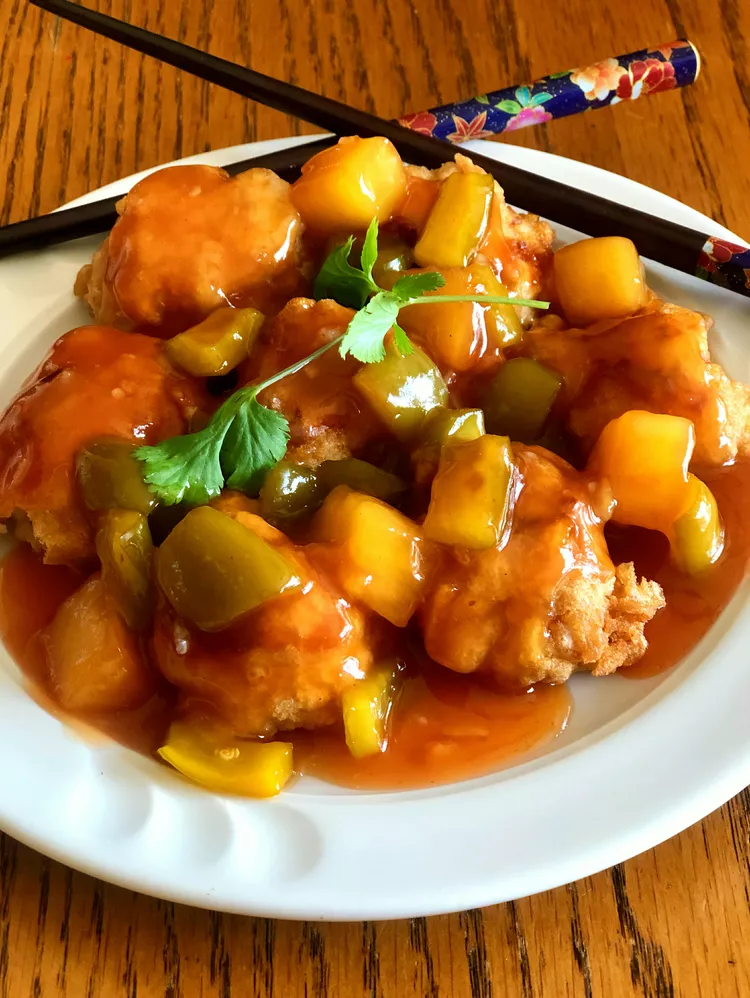

Sweet and Sour Chicken

Deep fried chicken in a sweet and sour sauce with peppers, onions, carrots and pineapple
List of Ingredients
- 1 cup ice water
- 1 egg
- ¼ teaspoon baking soda
- ¼ teaspoon salt
- 2 cups all-purpose flour, divided
- 4 skinless, boneless chicken breasts, cut into cubes
- vegetable oil for frying
Sauce:
- 4 tablespoons cornstarch
- 3 tablespoons water
- 1 cup white sugar
- ½ cup ketchup
- ½ cup white vinegar
- ½ cup water
- ½ cup orange marmalade
- ½ cup chopped fresh pineapple (Optional)
- 2 tablespoons pineapple juice
- 2 teaspoons soy sauce
- 1 ½ teaspoons minced fresh ginger root
- 1 teaspoon minced garlic
- ¼ teaspoon red pepper flakes
Directions
- Beat ice water and egg together in a bowl using a whisk or a fork.
Add baking soda and salt and mix to combine.
Add 1 cup flour to water
mixture; mix until blended but lumpy.
- Place remaining 1 cup flour in a separate bowl. Cover each piece
of chicken in flour, then move to egg mixture
and cover, letting excess
batter drip off.
- Heat vegetable oil in a wok or large, deep frying pan over medium
heat until a drop of water crackles when placed
into oil.
- Place chicken into the hot oil and fry, flipping if needed, until
no longer pink in the center and golden brown, 3 to
4 minutes. Set aside
and keep warm.
- Combine cornstarch and 3 tablespoons water in a small bowl.
- Combine sugar, ketchup, vinegar, 1/2 cup water, orange marmalade,
pineapple, pineapple juice, soy sauce, ginger,
garlic, and red pepper
flakes in a medium saucepan. Bring to a boil; add cornstarch mixture.
Reduce heat and let
simmer, stirring frequently, until desired thickness
is reached.
- Pour sauce over chicken and serve.
Other Recipes
Thai Green Curry Lasagne